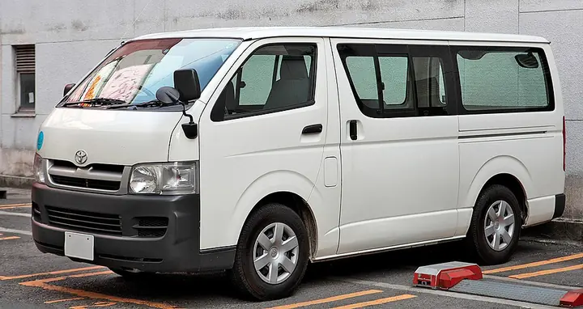
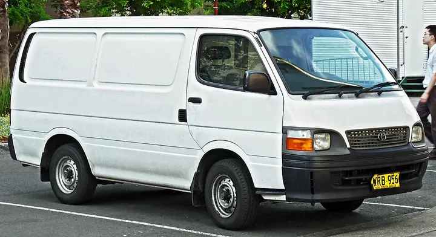
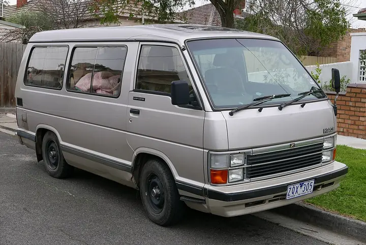
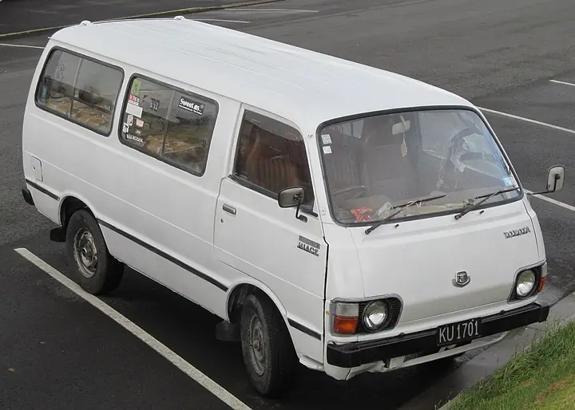
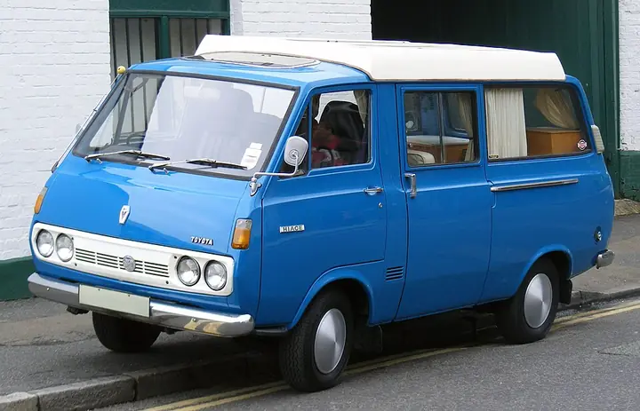

Toyota HiAce
Sixth generation (H300; 2019) · 2019–present
Abstract
This generation of the Toyota HiAce was built 2019–present in Japan: Inabe, Mie (Toyota Auto Body); Kakamigahara, Gifu (Gifu Auto Body), Thailand: Thepharak (Toyota Auto Works), Argentina: Zárate. Body styles: 4/5-door van/minibus. Layout: Front-engine, rear-wheel-drive. Designed by Takuo Ishikawa.

.jpg){kind=link}
1Specifications
| Production | 2019–present |
|---|---|
| Assembly | Japan: Inabe, Mie (Toyota Auto Body); Kakamigahara, Gifu (Gifu Auto Body)Thailand: Thepharak (Toyota Auto Works)Argentina: Zárate |
| Designer | Takuo Ishikawa |
| Body style | 4/5-door van/minibus |
| Layout | Front-engine, rear-wheel-drive |
| Engine | Petrol:2.7 L 2TR-FE I43.5 L 7GR-FKS V6Diesel:2.8 L 1GD-FTV I4 |
| Transmission | 5-speed manual6-speed RC60J manual6-speed AC60 automatic |
| Wheelbase | 2570 mm (I4 Standard Roof) LWB3110 mm (I4 High Roof) SLWB3210 mm (Normal/Standard Roof, GranAce/Granvia/Majesty/Super Grandia) LWB3860 mm (Long/High Roof) SLWB |
| Length | 5380 mm (I4 High Roof) SLWB5265 mm (Normal/Standard Roof) LWB5915 mm (Long/High Roof) SLWB5300 mm (GranAce/Granvia/Majesty/Super Grandia) LWB |
| Width | 1880 mm (I4 High Roof) SLWB1950 mm (Normal/Standard Roof, Long/High Roof) LWB & SLWB1970 mm (GranAce/Granvia/Majesty/Super Grandia) LWB |
| Height | 2285 mm (I4 High Roof) SLWB1990 mm (Normal/Standard Roof, GranAce/Granvia/Majesty/Super Grandia) LWB2280 mm (Long/High Roof) SLWB |
| Weight | 1715-2290 kg |
| Also called | Toyota GranAce (Japan, 2019–2024)Toyota Commuter (Thailand)Toyota Majesty (Thailand, Bhutan, Myanmar and Brunei)Toyota Granvia (Taiwan, Australasia, Southeast Asia and Middle East)Toyota Quantum (South Africa) |
| Predecessor | Toyota Previa/Estima (Japan, Taiwan and Middle East, for GranAce and Granvia)Toyota Ventury (Thailand, for Majesty)Toyota Tarago (Australia, for Granvia) |
2Versions
- GranAce/Granvia/Majesty/HiAce Super Grandia/HiAce VIP/Quantum VX
3Previous generations



_van_(2011-11-04).jpg){kind=link}

_Super_Custom_van_(2015-07-14)_01.jpg){kind=link}

.jpg){kind=link}


4Generation by generation
Length +25% from the first to the last
H10 19674,305 mm
H11 19774,340 mm
H50 19824,425 mm
H100 19894,430 mm
H200 20044,695 mm
H300 20195,380 mm
Weight +52% from the first to the last
H10 19671,130 kg
H100 19891,560 kg
H200 20041,610 kg
H300 20191,715 kg